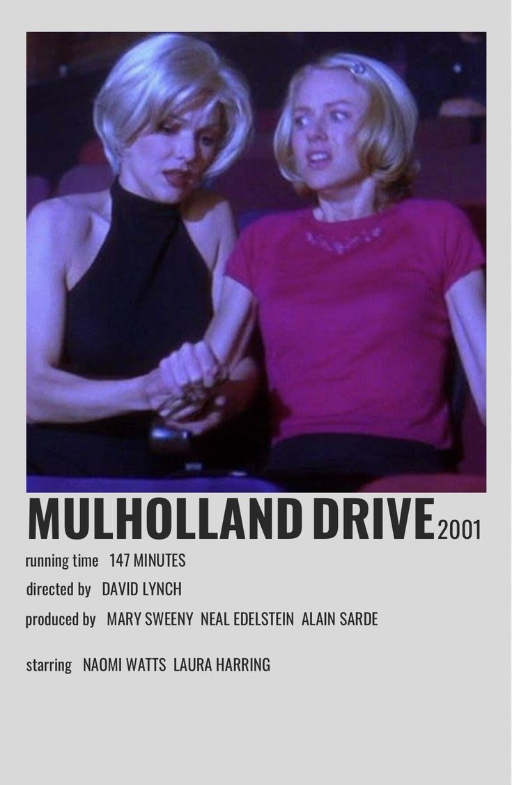

In New York City in 1987, a handsome, young urban professional, Patrick Bateman (Christian Bale), lives a second life as a gruesome serial killer by night. The cast is filled by the detective (Willem Dafoe), the fiance (Reese Witherspoon), the mistress (Samantha Mathis), the coworker (Jared Leto), and the secretary (Chloë Sevigny). This is a biting, wry comedy examining the elements that make a man a monster.
MULHOLLAND DRIVE

A dark-haired woman (Laura Elena Harring) is left amnesiac after a car crash. She wanders the streets of Los Angeles in a daze before taking refuge in an apartment. There she is discovered by Betty (Naomi Watts), a wholesome Midwestern blonde who has come to the City of Angels seeking fame as an actress. Together, the two attempt to solve the mystery of Rita's true identity. The story is set in a dream-like Los Angeles, spoilt neither by traffic jams nor smog.